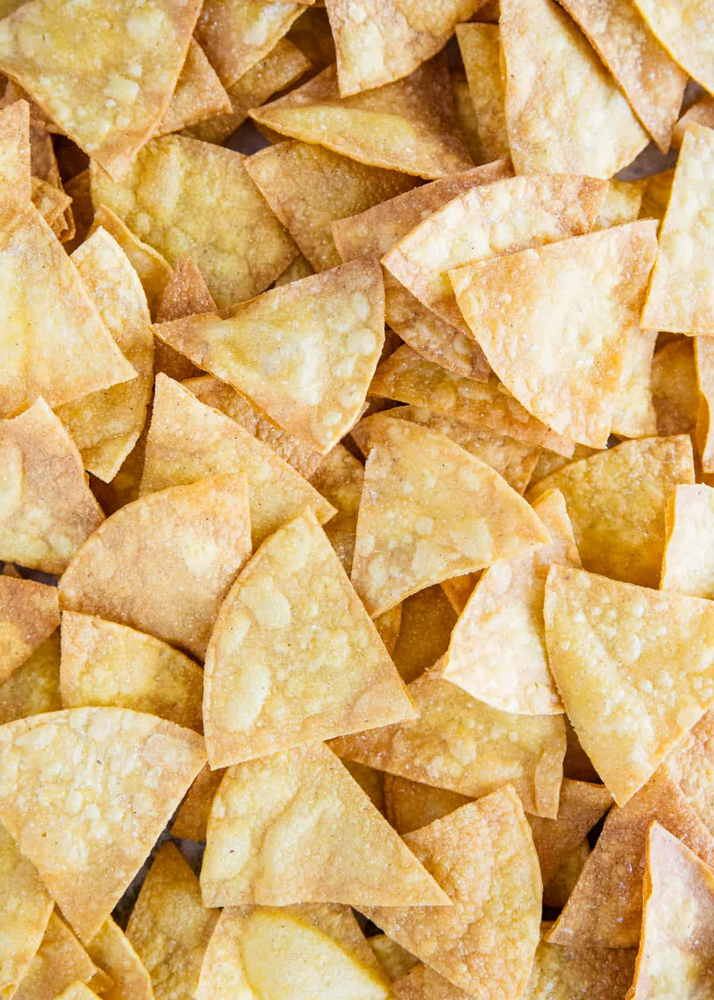
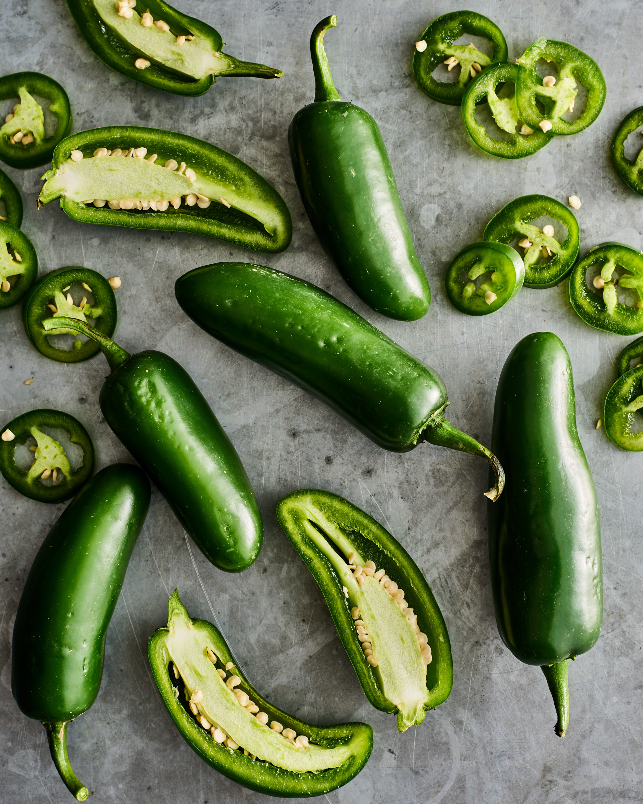

Salsa is a timeless classic that can be paired with many dishes

The type of chips you use is very important.

If you would like your salsa to be less spicy, you can remove the seeds from the jalapenos. Alternatively, leave the seeds in for an extra kick.
Salsa
Servings
4
Ingredients
- 1.25 lbs ripe Roma tomatoes
- 1 can petite diced tomatoes*
- 2 green onions,** ends trimmed, chopped into thirds
- 0.33 cup chopped red onion
- 1 jalepeno pepper,*** seeded and roughly chopped
- 0.33 cup fresh cilantro
- 1 large clove garlic
- 2 Tbsp fresh lime juice
- 0.5 tsp chili powder
- 0.25 tsp ground cumin
Instructions
- Chop up everything and put it in a blender.
- Blend it and eat with chips.